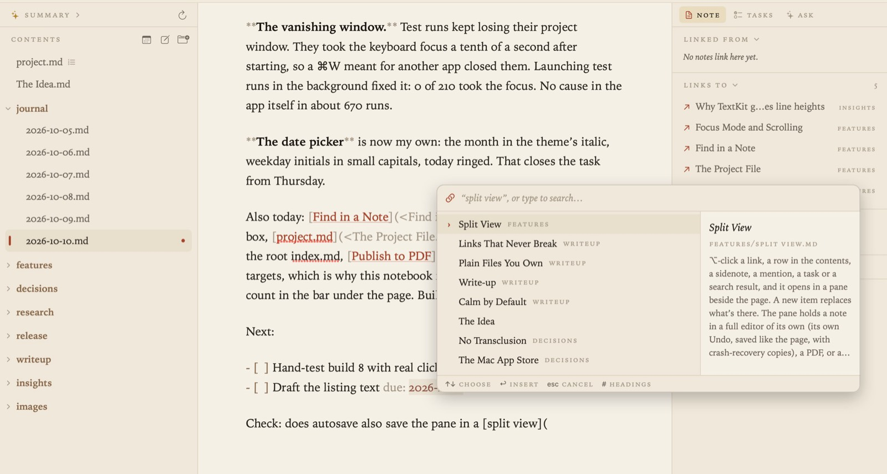

Links and Backlinks
Notes in Grasmere link to each other with ordinary Markdown links, written relative to the note they’re in, the way GitHub and website builders read them: [Margaret](people/Margaret.md). Grasmere keeps every link correct as your notes move, and shows each note the notes that link to it.

Making a link
- Type
[text](and a picker opens at the cursor. Notes that match the text come first, with a preview of the highlighted one beside the list. Press Return to insert the link. Choose “New note” to make a note that isn’t there yet. - Select some words and press ⌘K (Edit ▸ Insert Link…), then choose a note.
- Link to a heading: after a note’s name in the picker, type
#and choose one of its headings. The link ends in the heading’s id, as inThe%20Allotment.md#the-shed. - Link to a picture: the picker lists pictures in the project as well as notes.
- Paste a web address and it becomes a link titled with the page’s name once the title has loaded. Undo (⌘Z) keeps the bare address.
Names with spaces are written with %20, as the web expects, so links work in other apps and on a website too.
Links to passages
A link can point at a passage rather than a whole note, using the same text fragments that web browsers follow (note.md#:~:text=…). Select some text, choose Edit ▸ Copy Link to Selection (⌥⌘L), and paste the link into any note.
In the quoted note, a small number in the margin marks each passage another note links to. Point at the number to see the passage highlighted. If the passage is reworded a little, Grasmere repairs the link to match.
Following links
- Rest the pointer on a link for a moment to see a preview: a note’s opening, a heading’s section, a quoted passage, a web page’s title and description, or a picture. Move onto the preview and click it to open what it shows.
- ⌘-click a link to follow it straight away.
- ⌥-click a link to open it in a pane beside the page. See Focus Mode and Split View.
- Go ▸ Back (⌘[) and Forward (⌘]) step through the notes you’ve opened. A mouse’s side buttons and a two-finger swipe do the same.
Links stay correct
Rename or move a note or a folder, in Grasmere, in Finder or in a terminal, and every link to it is rewritten in every note that links to it. Heading links and passage links are kept pointing at the right text too.
- A message beneath the page says how many notes were updated, with Undo.
- Edit ▸ Link Updates… lists recent updates, each of which can be undone.
- A note you’re editing at that moment is never overwritten: its links are updated in the open note instead.
- Grasmere notices changes made in other apps by itself. Project ▸ Update Links Now looks straight away, if you’ve just moved things in Finder and don’t want to wait.
Settings ▸ Links ▸ Update links automatically when notes move is on by default. Turn it off and Grasmere asks before updating links. Ask first when more than 25 notes would change sets the size of change that always asks first.
Broken links
A link to a note that isn’t there is shown muted, over a dotted underline, and its preview says so. When a project has broken links, the contents list them in a section of their own; click one to go to it.
Backlinks
The margin on the right shows, for the open note, every note that links to it (Linked from), the notes it links to (Links to), and notes that name it without linking (Mentioned in). See The Margin.
Settings
In Settings ▸ Links:
- Shorten link addresses shows only the end of each address, such as
[Sam](Sam.md)for[Sam](../../people/Sam.md). The full address appears while the cursor is in the link. Your notes aren’t changed. - Turn pasted web addresses into titled links can be turned off.
Tips
- Grasmere doesn’t use
[[wiki-links]]. Standard links are what make your notes work everywhere else. See Support if you’re bringing notes from Obsidian. - A link to a folder’s
index.mdis a good way to point at a whole folder.